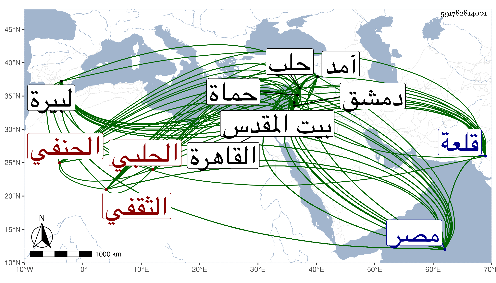

0902Sakhawi.DawLamic.ITO20230111-ara1.EIS1600.591782814001
Biography ID: 591782814001
755
محمد بن محمد بن محمد بن محمد بن محمود بن الشهاب غازي بن أيوب بن حسام الدين محمود شحنة حلب بن الختلو بن عبد الله المحب أبو الفضل بن المحب أبي الوليد بن الكمال أبي الفضل بن الشمس أبي عبد الله الثقفي الحلبي الحنفي الآتي أبوه والد الماضي قريبا وعبد البر الماضي ويعرف كسلفه بابن الشحنة . ولد كما حققه في رجب سنة أربع وثمانمائة وأمه واسمها من ذرية موسى الذي كان حاجب حلب وبنى بها مدرسة ثم ولي نيابة البيرة قلعة الروم ومات بالبيرة في سنة خمسين وسبعمائة . وكان مولد المحب بحلب ونشأ بها فقرأ عند الشمس الغزي وسافر مع والده إلى مصر قبل استكماله عشر سنين فقرأ في اجتيازه بدمشق عند الشهاب البابي وفي القاهرة عند البرديني وكتب على ابن التاج وعبد الله الشريفي يسيرا ثم عاد إلى حلب فأكمل بها القرآن عند العلاء الكلزي وحفظ في أصول الدين عمدة النسفي وغيرها وفي القراآت الطيبة لابن الجزري وفي علوم الحديث والسيرة ألفيتي العراقي وفي الفقه المختار ثم الوقاية وفي الفرائض الياسمينية وفي أصول الفقه المنار وفي النحو الملحة والالفية والشذور وبعض توضيح ابن هشام وألفية ابن معطى وفي المنطق تجريد الشمسية وفي المعاني والبيان التلخيص إلى غيرها من مناظيم أبيه وغيرها حسبما قاله لي بزيادات وأنه كان آية في سرعة الحفظ بحيث أنه حفظ ألفية الحديث في عشرة أيام ورام فعل ذلك في ألفية النحو فقرأ نصفها في نصف المدة وما تيسر له في النصف الثاني ذلك ، وعرض بعض محافيظه على عمه أبي البشري والعز الحاضري والبدر بن سلامة وكتب له فيما قاله لي :
| سمح الزمان بمثله فأعجب له | إن الزمان بمثله لشحيح |
| فالأصل ذاك والخلال حميدة | والذهن صاف واللسان فصيح |
وأخذ عن الأخيرين في الفقه وعظم انتفاعه بثانيهما وقرأ عليه في أصلي الديانة والفقه وفي المنطق تجريد الشمسية كما أخذه عن مؤلفه أحمد الجندي واشتدت عنايته بملازمته وعنهما أخذ العربية وكذا عن عمه وآخرين كالشهاب بن هلال قرأ عليه الحاجبية قال وكان يتوقد ذكاء غير أنه كان ممتحنا بابن عربي ولذا ما مات حتى اختل عقله ، ولازم البرهان حافظ بلده في فنون الحديث وحمل عنه أشياء بقراءته وقراءة غيره وتخرج به قليلا وضبط عنه فوائد وقال أنه كان يصرفه عن الاشتغال بالمنطق ويقول له كان جدك الكمال يلوم ولده والدك على توسعه فيه . وصاهر العلاء بن خطيب الناصرية فانتفع به وكتب عنه أشياء وكذا أخذ القليل عن شيخنا حين قدومه عليهم في سفرة آمد بعد أن كان راسله في سنة ثمان وعشرين يستدعي منه الإجازة قائلا في استدعائه :
| وإذ عاقت الأيام عن لثم تربكم | وضن زماني أن أفوز بطائل |
| كتبت إليكم مستجيزا لعلني | أبل اشتياقي منكم بالرسائل |
وفي هذه السنة أجاز له من بعلبك البرهان بن المرحل ومن القاهرة الشهاب الواسطي والشهاب المعروف بالشاب التائب وسمع في بلده من الشهابين أبي جعفر بن العجمي وابن السفاح وأبي الحسن علي بن محمد بن إبرهيم الشاهد وست العرب ابنة إبرهيم بن محمد بن أبي جرادة وأخذ بحماة حين توجهه لملاقاة عمه إذ حج عن النور محمود ابن خطيب الدهشة وأول ما دخل القاهرة مستقلا بنفسه في سنة أربع وثلاثين ولقي بدمشق حينئذ العلاء بن سلام والشهاب بن الحبال وتذاكر معه وسأله عن السر في وصف الرجل بالذكر في قوله صلى الله عليه وسلم فما أبقت الفرائض فلا ولى رجل ذكر فأجاب بأنه ورد في بعض الأحاديث لفظ الرجل فالمراد به الأنثى فالتأكيد لدفع التوهم فلينظر والعلاء البخاري وسمع مذاكرته مع ابن خطيب الناصرية وبالقاهرة التقى المقريزي بل قال أنه جاءه صحبة شيخنا للسلام عليه وأنه اتفقت نادرة بديعة الاتفاق وهي أن المحب سأل من شيخنا عن رفيقه لكونه لم يكن شخصه فأعلمه بأنه المقريزي وأظهر التعجب من ذلك لكونه فيما سلف عند إشاعة مجيء والده التمس من المقريزي لعدم سبق معرفته به استصحابه معه للسلام ففعل وجاءه ليتوجها فلم يجده فانتظره حتى جاء ثم توجها فسأله الوالد عني واتفق الآن مثل ذلك فإنني توجهت للتقي فقيل لي أنه بالحمام فانتظرته ثم جئنا فسلمنا فسألتم مني عنه فتقارضنا فالله أعلم . ولم يستكثر من لقاء الشيوخ بل ولا من المسموع واكتفى بشيخه البرهان مع ما قدمته نعم هو مثبت في استدعاء النجم بن فهد الذي أجاز فيه خلق من أماكن شتى وكذا لم يتيسر له الاشتغال بالعروض مع أنه إذا سئل النظم في أي بحر منه يفعل حسبما قاله وإن عمه العلاء سأله وهو ابن اثنتي عشرة سنة أو نحوها أتحسن الوزن فقال له نعم قال فعارض لي قول الشاعر :
| أمط اللثام عن العذار السابل | ليقوم عذري فيك بين عواذلي |
فقال بديهة :
| اكشف لثامك عن عذارك قاتلي | لتموت غبنا إن رأتك عواذلي |
قال فاستحسن العم ذلك ، وسمع من لفظ الزين قاسم جامع مسانيد أبي حنيفة للخوارزمي وكان يستمد منه ومن البدر بن عبيد الله حين كان ولده الصغير يقرأ على كل منهما بحضرته كما أنه كان يستمد من كاتبه بالمشافهة والمراسلة ونحوهما حين كان يتردد إليه بل ربما سمع بعض تصانيفه بقراءة ابنه أو سبطه عليه بحضرته وأول ما ولي من الوظائف اشتراكه مع أخيه عبد اللطيف في تدريس الأشتقتمرية والجردكية والحلاوية والشاذبختية برغبة أبيهما لهما عنها قبل موته ثم استقل في سنة عشرين بالأولى وعمل فيها أجلاسا رتبه له شيخه البدر بن سلامة وأنشد البدر حينئذ مشافها له :
| أقسمت أن جد وطال المدى | روى الورى من بحره الزاخر |
| فقل لمن بالسبق قد فضلوا | كم ترك الأول للآخر |
وقضاء العسكر ببلده برغبة التاج بن الحافظ وإمضاء المؤيد إذ حل ركابه بحلب فيها ثم بتدريس الشاذبختية بعد ولد قاضي حلب يوسف الكوفي ثم قضاء الحنفية ببلده في سنة ست وثلاثين ولاه إياه الأشرف إذ حل ركابه فيها وكانت الوظيفة كما قاله شيخنا إذ ذاك شاغرة منذ تحول باكير إلى القاهرة بعد إشارة شيخه البرهان عليه بالدخول فيه بقصده الجميل ثم كتابة سرها ونظر جوالها عوضا عن الزين بن الرسام في يوم الاثنين مستهل ذي القعدة سنة ثمان وأربعين بالبذل مع عناية صهره الولوي السفطي وكان قد تزوج ابنته بعد موت ابنة ابن خطيب الناصرية بل استقر أيضا في نظر جيشها وقلعتها والجامع الكبير النوري وكذا في تدريس الجاولية والحدادية والتصدير بالجامع وخطابته مما تلقى بعضه عن صهره الأول وما يفوق الوصف بحيث صارت أمور المملكة الحلبية كلها معذوقة به ولاية وإشارة ، وعظمت رياسته وتزايدت ضخامته واشتهرت كثرة جهاته وكفاءته بما يناسبها من صفاته فانطلقت الألسن بذكره وانجر الكلام لما لا خير في إشاعته ونشره ولم ينهض أحد لمقاومته ولا التجري على مزاحمته خصوصا مع تمكن صهره من الظاهر وانقياد العظماء لبأسه القاهر فلما انخفضت كلمته وزالت طلاقته وبهجته تسوروا لجانبه وكاد أن يدفع عن جل مآربه فبادر قصدا للخلاص من الضير إلى الانتماء للنحاس المدعو أبا الخير في أيام علوه وعزه لينتفع بإشارته ورمزه فلم يلبث أن انقلب على النحاس الدست ورمى من جميع الناس بالمقت كما هي سنة الله في الجبابرة ومنة الله على الطائفة التي بالحق قاهرة وظهر أن الجمال كان لصنيعه قد تأثر حيث انجمع عن مساعدته بل ما خفي أكثر ويقال أن الأمير قانم هو الكافل بإلفاته عنه والقائم وتوالت المحن بصاحب الترجمة وربما ساعده البدر قاضي الحنابلة بما له من السلطنة ونفوذ الكلمة واستمر في المكابدة ومزيد المناهدة بما أضربت عن إيراده ببسط العبارة واكتفيت بما رمزت به في هذه الإشارة خوفا من غائلة متساهلي المؤرخين في الإقدام على إثبات ما قد لا يوافق الواقع بيقين واختلاف الأغراض في الحوادث والأعراض سيما وقد رأيت المحب صار يتتبع الكثير مما أثبته بعضهم فيه بالكشط بدون ملاحظة لاستمرار التئام الذي له المؤرخ خط وربما أثبت غير اسمه أصلا لكونه يرى أنه ليس لذلك أهلا ولكن رأيت العيني قال حين استقرار المحب في جملة وظائف أنه استقر فيها بعد حمله من الأموال الجزيلة والهدايا الجليلة ما يطول شرحه وعز ذلك على أهل بلده قال ولم يتفق قط مثل هذا في حلب ولكن بالرشاء يصل المرء في هذه الأزمان إلى ما يشاء وقد قال صلى الله عليه وسلم لعن الله الراشي والمرتشي والرائش ، وقال البقاعي في ترجمة التيزيني وحصلت له كائنة مع ابن الشحنة في سنة خمسين بغته فيها وأدخل عليه الخمر إلى بيته من جهة ربيبه وزين لحاجب حلب حتى أوقع به وسجنه وله من هذا النمط بل وأفحش منه مما يتحاكاه أهل بلده الكثير ولما ملوا منه وجه سعيه إلى رسوخ قدمه في الديار المصرية ليكون مرعيا في نفسه وجماعته وجهاته التي تفوق الوصف فاجتهد حتى ولي كتابة سرها في ذي القعدة سنة سبع وخمسين عوضا عن ابن الأشقر ببذل كثير جدا فلم يتهن بمباشرتها مع عظيم المملكة الجمال بل صار معه كآحاد الموقعين ومع ذلك فلم يستكمل فيها سنة بل أعيد صاحبها بعد ثمانية أشهر وأيام ودام هذا بالقاهرة مكروبا متعوبا مرعوبا مشغول الخاطر لما استدانه فيما لم يظفر منه بطائل إلى أن وجه لبيت المقدس في أواخر ذي القعدة من التي تليها بعد أن زود من أفضال الجمال بما يرتفق به فوصله في سابع ذي الحجة فأقام به ولقيته هناك على طريقة حسنة من العبادة والتلاوة والاشتغال والإشغال بحيث أخبرني أنه يختم القرآن كل يوم وأنه جوده بحضرة الشمس بن عمران شيخ القراء بتلك الناحية وأنه كان يكتب في كل يوم كراسة فالله أعلم ولكن رأيته هناك أحضر بعض مماليكه وأشهد عليه أنه إن أقام بالقاهرة أو حلب أو غيرهما من البلاد الشامية أو صاحب أحدا من أعدائه أو صادقه أو نحو ذلك يكون مشركا بالله عز وجل ونحو هذا فكربت لذلك وما استطعت الجلوس بل انصرفت ويقال أنه في مملكة ابن عثمان واستمر المحب مقيما بالقدس إلى إحدى الجمادين سنة اثنتين وستين فأذن له في العود للمملكة الحلبية بعد سعي شديد أو في الرجوع لمصر فاختيرت بلده فأقام بها بدون وظيفة لرغبته عن قضاء الحنفية فيها لابنه الكبير الأثير من مدة وأضيف حينئذ قضاء الشافعية بها لحفيده الجلال أبي البقاء محمد لمزيد تضررهم بمن كان يكون فيه كالشهاب الزهري ونحوه مما أظن تسليطهم عليه انتقاما من الله عز وجل بما عمله هو مع البرهان السوبيني ذاك العبد الصالح حسبما سمعته يتبجح بحكايته غير مرة فلم يزل مقيما بها إلى أن ورد الخبر بموت الجمال فبادر لقدوم القاهرة فوصلها في يوم الجمعة رابع جمادى الأولى من التي تليها فأعيد إلى كتابة السر أيضا ببذل يفوق الوصف بعد صرف المحب بن الأشقر واستقر بحفيده لسان الدين أحمد في نيابتها ولم يلبث أن مات ابن الأشقر وباشر حينئذ مباشرة حسنة على الوضع بأبهة وضخامة وبشاشة وسار مع الناس سيرة مرضية بلين ورفق وتواضع ومداراة وأنزل الناس منازلهم وصرف الأمور تصريفا حسنا وأقبل عليه الأشرف إينال إقبالا زائدا ثم كان هو المنشئ لعهده في مرض موته لولده أحمد الملقب بالمؤيد إذ بويع فأبلغ حسبما أوردته في ترجمته من الذيل وغيره ولم يعدم مع ذلك من كلام كثير بحيث خاض الناس في تطيره من النور الإنبابي والبرهان الرقي ورغبته في زوالهما بما لم أثبته واستمر إلى أن استقر في قضاء الحنفية بعد ابن الديري وظن جمعه له مع كتابة السر وإذعانهم لما أظهر التعفف باشتراطه فخاب رجاؤه حيث انفصل عنها بأخي المنفصل وناكده في القضاء أتم مناكدة وظهرت بركة المنفصل فيهما معا لانفصال الأخ ثم القاضي قبل استكمال عشرة أشهر . ومات المستقر عوضه بعد خمسة أشهر فأعيد وألزم بالحج فسافر وهو متلبس بالقضاء مظهرا التكلف لذلك وأمير ركب الأول حينئذ الشرف يحيى بن يشبك الفقيه زوج ابنته وعاد فدام في القضاء حتى صرف ثم أعيد ثم صرف ولم يتول بعدها نعم استقر في مشيخة الشيخونية تصوفا وتدريسا مضافا لما كان استقر فيه في أثناء ولايته القضاء من تدريس الحديث بالمؤيدية ورام حوز جهات كثيرة بالديار المصرية كما فعل في المملكة الحلبية فما قدر فإنه استنزل لنفسه عن تصوف بالأشرفية برسباي ولولده الصغير عن إعادة بالصرغتمشية لمناكدة ابن الأقصرائي في مشيختهما وزوج الابن أيضا بابنة العضدي الصيرامي ليتوصل بها لمشيخة البرقوقية بعد أن رام تزويجه بابنة البدر بن الصواف ليحوز أمواله وغيرها وأكثر من التسليط على خازن المحمودية لينزل له عنها فما سمح بل عزل نفسه عن النيابة عنه لينقطع حكمه فيه وتلطف حين كان كاتب السر بالبدر ابن شيخنا ورغبه في الوقوف به إلى السلطان ليعيد له مشيخة البيبرسية وينتزعها من ابن القاياتي بشرط رغبته له عنها بعد العود فامتنع وأبرز بعد موت ابن عبيد الله نزولا منه بسائر ما معه من تدريس ومشيخة وغير ذلك فلم يصل لشيء مما ذكر بل دندن بالأميني الأقصرائي لتخرج وظائفه عنه في حياته حين ظفر بإجازة بخطه زعم أن فيها ما يدل على اختلاله وصار يقول قد أخرجت الشيخونية عن فلان حين بلغ لنحو هذا الحد ويأبى الله إلا ما أراد ومن لم يجعل الله له نورا فما له من نور وتوسع في التلفت للوظائف ولو لم تكن جليلة حتى أنه سعى فيما كان باسم البدر الهيثمي من تصوفات وأطلاب ونحوها مع كونه ترك أبا شيخا كبيرا من قضاة الشرع واستكتب ناظر البيبرسية والسعيدية على وظائف الشهاب الحجازي فيهما في مرض كان يتوقع موته فيه ثم نزل عنهما بخمسين دينارا وتألم الشهاب لذلك كثيرا وما كان بأسرع من عافيته وبقائه بعد ذلك نحو سنتين وكثيرا ما كان يجتهد في السعي فيما لم يستحقه ثم يرغب عنه لمن ليست فيه أهلية كما فعل في تدريس الحديث بالحسنية وأما أخذه المرتبات في أوقاف الصدقات ونحوها كالسيفي والمخاصمة على أخذه قبل المستحقين فأمر واضح وكذا الاستنابة عن القضاة الشافعية في كثير من البلاد كالشرفية والمنية وغيرها من القليوبية ونحو ذلك وتعاطيه من النواب عنه فيها ما يحاققهم عليه ويتلفت فيه إلى الزيادة بحيث يضج النواب ويسعون في إخراجها عنه فأخرجت الشرقية للنور البلبيسي والمنية لابن قمر ففوق الوصف وتوسع في إتلاف كثير من أموال الناس بعد إرغابه حين افتراضه منهم بأعلى الربح ثم عند المطالبة يبدو منه من الإهانة لهم ما لم يكن لواحد منهم في حساب ومن ذلك فعله مع ابني ابن شريف وابن حرمي وابن الطناني وابن المرجوشي وابن بنت الحلاوي ومن لا أحصرهم سيما من أهل البلاد والأمر في كل ما أشرت إليه أشهر من أن يذكر ولو أطعت القلم في هذا المهيع لامتلأت الكراريس . وبالجملة فهو فصيح العبارة غاية في الذكاء وصفاء القريحة بديع النظم والنثر سريعهما متقدم في الكشف عن اللغة وسائر فنون الأدب محب في الحديث وأهله إلا حين وجود هوى غيرمتوقف فيما يقوله حينئذ شديد الإنكار على ابن عربي ومن نحا نحوه نهاية في حلاوة المنطق وحسن العشرة والصحبة واستجلاب الخواطر مائل إلى النكتة اللطيفة والنادرة راغب في الكمالات الدنيوية وأنواع الشرف والفخار منصرف الهمة فيما يتوصل به لذلك عظيم العناية في تحصيل الكتب ولو بالغضب والجحد حتى كان ذلك سببا في منع ابن شيخه البرهان عارية كتب أبيه أصلا إلا في النادر خوفا منه كما صرح لي به وصار هو يذكره بالقبيح من أجل هذا ولقد توسل بي عنده القاضي علم الدين في رد ما استعاره منه وخازن المحمودية وغيرهما مع ضياع شيء كثير لي عنده وعند أصغر ابنيه إلى الآن وكذا أخذ للسنباطي أشياء وجحد بعضها هذا وهو لا يهتدي للكشف من كثير منها ولا يعبر منها إلا لمن له شوكة بهي المنظر حسن الشكالة والشيبة ذو نفس أبية وهمة علية ورياسة وكياسة وتهجد فيما حكى لي وصبر على المحن والرزايا وقوة جأش ومبالغة في البذل ليتوصل به إلى أغراضه الدنيوية بحيث يأتي ذلك على ما يتحصل له من جهاته التي سمعته يقول أنها سبعة آلاف دينار في كل سنة ويستدين بالفوائد الجزيلة ثم ينقل عليه الوفاء كما أشرت إليه قريبا ولا يزال لذلك يتشكى حتى أن العلم بن الجيعان يكثر تفقده له بالمبرات مع كونه رام مناطحة العلم فخذل وكذا أسعفه الدوادار الكبير مرة بعد أخرى وأما الزين بن مزهر فلم يزل يتفقده حتى بالطعام مع مزيد جنايته عليه حتى مواجهة ومشافهة على أن العز الحنبلي لم يكن يقبل منه شكواه ولا دعواه ويقول بل هو كثير الأموال ورغبة في الانتقام عن من يفهم عنه مناوأة أو معارضة ما بحيث لا يتخلف عن ذلك إلا عند العجز ويصرح بما معناه أثبت إلى أن تجد مجالا فدق وبت ويحكى عنه في الاحتيال على الإتلاف ما لا أثبته ومنه ما حكاه لي الزين قاسم أنه دس عليه من وضع في زيره شيئا بحيث خرج على بدنه ما كاد أن يصل إلى الجذام ونحوه ، كثير التأنق في ملبسه ومسكنه وسائر تمتعاته وهو بالمباشرين أشبه منه بالعلماء كما صرح به له غير مرة الكافياجي بل والعز الحنبلي ولم يكن يقيم له وزنا في العلم كما سمعته أنا وغيري ومنه وما وجد بخطه في المائة التاسعة له من ترجمته له فيما قلدني فيه قبل أن أخبره مما قلدت فيه بعضهم على ما يشهد به خطه الذي عندي وقال له المناوي كيف يدعي العلم من هو مستغرق في تمتعاته وتفكهاته ويبيت في لحف النساء ليلة بتمامه العلم له أهل والكلام فيه كثير جدا لا أقدر على حكايته وعلى كل حال فمجموعه حسن الظاهر ولهذا كان شيخنا يميل إليه خصوصا مع رغبته في تحصيل تصانيفه وكذلك لم أزل أسمع من صاحب الترجمة إظهار محبته ولكن مع إدراج أشياء يلمح فيها بشيء ثم رأيته ترجمه في مقدمة شرحه للهداية بقوله وكان كثير التنكيد في تاريخيه على مشايخه وأحبابه وأصحابه سيما الحنفية فإنه يظهر من زلاتهم ونقائصهم التي لا يعرى عنها غالب الناس ما يقدر عليه ويغفل ذكر محاسنهم وفضائلهم إلا ما ألجأته الضرورة إليه فهو سالك في حقهم ما سلكه الذهبي في حقهم وحق الشافعية حتى قال السبكي أنه لا ينبغي أن يؤخذ من كلامه ترجمة شافعي ولا حنبلي وكذا يقول في شيخنا رحمه الله أنه لا ينبغي أن يؤخذ من كلامه ترجمة حنفي متقدم ولا متأخر وكل هذا ليس بجيد ولقد جرح هذا الكلام لما وقفت عليه قلبي وما حمله عليه إلا ما قاله في أبيه وشيخنا هو العمدة في كل ما يثبته من مدح وقدح وهو في الدرجة التي رفعه الله إليها في الاقتداء والاتباع والخروج عن ذلك خدش في الإجماع
| إذ قالت حذام فصدقوها | فإن القول ما قالت حذام |
ولو أعرض عن هذا وكذا عما هو أشنع منه في حق غير واحد كالذهبي مؤرخ الإسلام ومن قبله الخطيب الذي الناس بعده في هذا الشأن عيال على كتبه وكالحنابلة حيث قال فيما سمعته منه في كتب أصحابنا أنه تعقد عليهم الجزية في ألفاظ كثر دعاء العز الحنبلي عليه بسببها بل سأل فيه من يتوسم استجابة دعائه وزاد صاحب الترجمة حتى دندن بالبخاري إلى غيرهم مما أتألم من حكايته فضلا عن إيراده بعبارته لكان كالواجب ولسلم من المعاطب وطالما خاض في كثير من أنساب الناس وكونهم غير عريقين في الإسلام وهذا لو كان صحيحا كان ذكره قبيحا وقد صار بنيه الصغير مع أحواله الظاهرة وخصاله المتنافرة المتكاثرة يقتفي أثر والده في ذلك ويتكلم في الكبار والصغار بكلام قبيح بعضه عندي بخطه ، وفي سنة تسع وسبعين نسب إليه وصف البلقيني الكبير وولده بالعامية فاستفتى حفيده الناس في ذلك فاتفقوا على استحقاقه التعزيز البليغ وصرح بعضهم بالنفي وعدم القبول منه لتوجيه ذلك بكون كل من لم يكن مجتهدا هو عامي نسأل الله السلامة وقد امتدحه للتعرض لنائله فحول الشعراء كالنواجي وسمعته يقول له في ولايته الأولى لكتابة السر مما سلك فيه مسلك غالب الشعراء والله لم يلها بعد القاضي الفاضل مثلك وابن أبي السعود وكان مغتبطا بكثرة محاضرته مرتبطا بفنائه وساحته ومن يليهم كالبرهانين المليجي والبقاعي واضطرب أمره فيه كعادته في السخط والرضا فمرة قال أنه أعظم رءوس السنة ومرة قال كل شيء رضينا به وسكتنا عليه إلا التعرض للبخاري ومرة قال ما سلف في فعله مع التيزيني ومرة قال حسبما قرأته بخطه مما وقف عليه المحب :
| إن كان بخل شحنة في نحسه | قد جاء بالثقيل والخفيف |
| فإنه المظنون فيه إذ أتى | إنذار خير الخلق من ثقيف |
وغيره فقال :
| إن كان بخل شحنة في قوله | كذب ومنه الوعد في تحليف |
| فإنه المظنون فيه إذ أتى | إنذارنا من كاذبي ثقيف |
وقال أيضا :
| لا بدع لابن شحنة إن فاق في | كذب وبهتان له منيف |
| فإن خير الخلق قد أنذرنا | من كاذب يكون في ثقيف |
وقال أيضا :
| لا بدع إن كان المحب وفي | بكذبة والصدق في تطفيف |
إلى غير هذا مما أردت به إظهار تناقض قائله مع جر الأذى للمحب من قبله مرارا ولكن الجزاء من جنس العمل فطالما نال من الزين قاسم حيث انتصر له منه في بعض الأوقات العز الحنبلي مع ما له عليه من حق المشيخة وغيرها بل قيل أنه دس عليه كما تقدم ونحوه ما اتفق له مع ابن عبيد الله مع مزيد انتفاعه بسعيه ومع الأمشاطي مع مزيد ترقيع خلله ودفع علله عند الأمراء وغيرهم من ذوي الحل والعقد ومع ابن قمر مع تحصيله له نفائس الكتب وتقديمه له فيها على نفسه ومع أبي ذر ابن شيخه مع ما لأبيه عليه من الحقوق ومع ابن أبي شريف مع قيامه على والده حتى أقرضه مبلغا لم يصل إلى كماله ومع الزين بن الكويز والعز الفيومي وغيرهم ممن تطول الترجمة بهم حتى وصل إلى الزيني بن مزهر الذي لولاه لأخرجوا من الديار المصرية على عوائدهم في اسوأ حال فإنه شافهه وقد حضر عنده لجنازة بما لا أحب إثباته وأما كاتبه فقد كان المناوي يتعجب من مساعدته له في الأمور التي كان يقصد بالتخجيل فيها ويصرح بذلك لبعض أخصائه وربما وصفه بأنه شيخه ، ونحوه قول ابن أقبرس مشافهة رأيتك عند ابن الشحنة كثيرا فهل تشحن منه أو يشحن منك إلى غير هذا مما بسط ومبالغته في الثناء والمحبة والتعظيم والوصف بأعلى الأوصاف في محل آخر مع ضده . وقد حدث ودرس في الفقه والأصلين والحديث وغيرها وأفتى وناظر وصنف ، ومن تصانيفه شرح الهداية كتب منه إلى آخر فصل الغسل في خمس مجلدات أو أقل ثم فتر عزمه عنه ومنها مما تضمنته مقدمة عدة مختصرات في أصول الكلام وأصول الفقه وعلوم الحديث وسماه المنجد المغيث في علم الحديث والمناقب النعمانية ومنها مما هو مفرد بالتأليف كالكلام على تارك الصلاة وسيرة نبوية واختصار المنار وسماه تنوير المنار واختصار النشر في القراآت لابن الجزري والجمع بين العمدة ويقول العبد في قصيدة بزيادات مفيدة واستيعاب الكلام على شرح العقائد ولكنه لم يكمل وكذا الكلام على التلخيص وشرح مائة الفرائض من ألفية أبيه وترتيب مبهمات ابن بشكوال على أسماء الصحابة وقال أن شيخه البرهان أشار عليه به وأنه كان في سنة ست وعشرين وطبقات الحنفية في مجلدات وغير ذلك من نظم ونثر وخرجت له أربعين حديثا عن شيوخ فيهم من أروى عنه سمعها عليه مع غيرها من مروياته بل وقطعة من القاموس للمقابلة الفضلاء وكذا قرأ عليه أخي بعض الأجزاء ومجالس من تفسير ابن كثير وكان ابتداء لقيي له في سنة اثنتين وخمسين وكتب عنه من أصحابنا النجم ابن فهد وأورده في معجمه وقرأ عليه الجمال حسين الفتحي وآخرون ولزم بعد عزله الأخير من القضاء وذلك في يوم الخميس حادي عشر جمادى الأولى سنة سبع وسبعين منزله غالبا وربما طولب بشيء من الديون وقد يشتكي إلى أن استقر في الشيخونية وذلك في يوم الخميس ثامن عشر جمادى الأولى سنة اثنتين وثمانين فصار يركب لمباشرتها تدريسا وتصوفا ثم تزايد ضعف حركته فاستخلف ولده فيها وفي المؤيدية وتوالت عليه الأمراض بحيث انقطع عن الجمعة واستمر على ذلك مدة طويلة بما يقرب من الاختلاط إلى أن مات في يوم الأربعاء سادس عشر المحرم سنة تسعين وصلي عليه من يومه برحبة مصلى باب النصر في مشهد متوسط ثم دفن بتربته في نواحي تربة الظاهر برقوق وذمته مشغولة بما يفوق الوصف وقد بسطت ترجمته في الذيل على القضاة وغيره بما يضيق المحل عنه رحمه الله وإيانا وعفا عنه وأرضى عنه أخصامه . ومما كتبته عنه قصيدة نظمها وهو بالقدس أولها :
| قلب المحب بداء البين مشغول | كما حشاه بنار البعد مشعول |
| وطرفه الليل ساه ساهر درب | فدمعه فوق صحن الخد مسبول |
وله مما يقرأ على قافيتين :
| قلت له لما وفى موعدي | وما لقلبي لسواه نفاق |
| وجاد بالوصل على وجهه | حبي سما كل حبيب وفاق |
